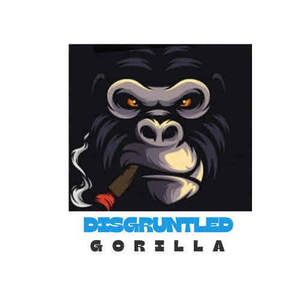

Trade Mark Journal No.2025/027 4 July 2025
UK00004222506 21 June 2025 (9)

- Class 9
- Electronic cables; Electronic connectors; Electrical and electronic connectors; Electronic and electrical connectors; Electrical cables; Electrical and electronic components; Connectors for electronic circuits; Electric cables and wires; Electric wires and cables; Electric cables; Cables, electric; Optical cables; Electric and electronic components; Interface cables [electric]; Communications cables; Telecommunications cables; Audio cables; Optical electronic components; Electronic components; Telecommunication cables; Cables and wires; Cable splices for electric cables; Electrical and electronic instruments for the transmission of data; Computer cables; Electronic telecommunications instruments; Connecting electrical cables; Electronic transformers; Electronic coils; Ducting for electric cables; Connections for electric cables; Cable junctions for electric cables; Electronic components for computers; Electrical cables for use in connections; Electronic communications instruments; Electronic amplifiers; Electronic circuits; Circuits [electric or electronic]; Metallic cables [electric]; Circulators [electric or electronic components]; Conduit for electric cables; Ignition cables; Apparatus, instruments and cables for electricity; Electrical cable connectors; Electronic controllers; Electronic semi-conductors; Electronic sensors; Electric wires for communication equipment; Digital electronic controllers; Electric adapter cables; Adapter cables (Electric -); Vibration dampeners for electronic audio equipment; Electricity mains (Materials for -) [wires, cables]; Materials for electricity mains [wires, cables]; Electrical and electronic apparatus for the transmission of data; Electronic microphone splitters; Electrical and electronic instruments for the reception of data; Male connectors for electrical cables; Electronic control circuits for electronic musical instruments; Electrical and electronic instruments for logging data; Cable identification markers for electric cables; Fibre-optic cables; Electronic communication equipment and instruments; Audio electronic apparatus; Electrical and electronic instruments for storing data; Coaxial cables; Cables (Coaxial -); Waveguides (Electronic -); Telephone cables; Cables for electrical signal transmission; Insulated electrical cables; Sheaths for electric cables; Electrical and electronic instruments for processing data; Electronic power controllers; Electronic components used in apparatus; USB chargers for electronic cigarettes; Electronic telecommunications apparatus; Electronic audio crossovers; Audio cable connectors; Electronic digitisers; Chargers for electronic cigarettes; Electronic power transformers; Electronic relays; Electronic communications apparatus; Electrical cable; Information storage devices [electric or electronic]; Electronic inductors; Electronic mail terminals; USB cables for cellphones; Modem cables; Batteries for electronic cigarettes; Electronic game software for handheld electronic devices; Electronic tuners; Electrical and electronic test apparatus and instruments; Electronic cigarette batteries; Wearable digital electronic communication devices; Electronic components used in machines; Electrical and electronic apparatus for logging data; Electric and electronic security apparatus and instruments; Guitar cables; Electronic communication installations; Electronic locks; Locks, electronic; Electrical and electronic apparatus for storing data; Coolers for electronic components; Antenna cables; Electrical and electronic apparatus for the reception of data; Padlocks, electronic; Cables for earthing; Electrical wires; Electronic doorlocks; Data cables; Cables for optical signal transmission; Electronic decoders; Electric and electronic video surveillance installations; Electronic meters; Electric cables for the transmission of sounds and images; Electronic plotters; Headphones; In-ear headphones; Earphones; Earbuds; Stereo headphones; Wireless headphones; Music headphones; Ear pads for headphones; Earphones for smartphones; Adapter cables for headphones; Two-way plugs for headphones; Cases for headphones; Headphone amplifiers; Noise cancelling headphones; Headphones for smart phones; Headsets; Headphone consoles; Wireless headsets; Binaural microphones; Wireless headsets for cellphones; Wireless headsets for smartphones; Headsets for smartphones; Wireless speaker microphones; Wireless audio speakers; Earphones for cellular telephones; Microphone cables; Headsets for use with computers; Microphone plugs; Personal headphones for sound transmitting apparatuses; Wireless headsets for smart phones; Headsets for telephones; Personal headphones for use with sound transmitting systems; Wireless headsets for tablet computers; Ear phones; Wireless speakers; Audio speakers; Anti-dust plugs for earphone jacks; Speakers [audio equipment]; Wearable speakers; Earphones for use with mobile telecommunication devices; Wireless headsets for mobile phones; Microphones; Soundbar speakers; Hands-free headsets for cell phones; Audio speakers for automobiles; Stereo amplifiers; Portable speakers; Loudspeaker cables; Portable vibration speakers; Telephone headsets; Audio amplifiers; Audio speakers for home; Wireless headsets for use with mobile telephones; Audio speakers for vehicles; Telephone earpieces; Hands-free microphones for cell phones; Dust proof plugs for earphone jacks; Audio speaker enclosures; Cords for sunglasses; Wearable audio equipment; Bone conduction earphones; Headsets for mobile telephones; Studio monitor loudspeakers; Earphones for handheld electronic game apparatus; Stereos; Earphones for consumer video game apparatus; Sub-woofers; Keyboard amplifiers; Audio adaptors; Portable speaker docks; Loudspeakers; Car speakers; Portable audio players; Audio devices and radio receivers; Clip-on sunglasses; Speakers for computers; Loud speakers; Multi-room audio devices; Speakers; Microphone buttons; Microphone mixers; Wireless audio and video receivers; Pairable wireless speakers; Dustproof plugs for jacks of mobile phones; Audio cassettes; Cassettes [audio]; Monitor speakers; Hi-fi stereo systems; Audio frequency amplifiers; Wireless charging pads for smartphones; Sound amplifiers; Microphones for communication devices; Electronic audio signal processors for compensating sound distortion in speakers; Mobile phone speakers; Automobile stereo adapters; Signal processors for audio speakers; Audio cable; Wireless keyboards; Audio loudspeaker systems; Audio discs; Audio cassette player head cleaners; Ear plugs for divers; Stereo receivers; Audio transmitters; Portable digital audio broadcasting radios; Auxiliary speakers for mobile phones; Optic discs carrying audio recordings; Portable digital audio broadcasting [DAB] radios; Audio cassette recorders; Loudspeakers with built in amplifiers; Audio cassette players; Cassette head cleaners for audio tapes; Audio equipment; Car stereos; Horns for loudspeakers; Audio equalizers; Integrated audio amplifiers; Sound cassettes; Speakers for portable media players; Headsets for playing video games; Audio recordings; Audio recording equipment; Audio cable testers; Listening devices for monitoring babies; Wristband computer devices; Portable radios; Electronic baby monitoring listening devices; Audiovisual headsets for playing video games; Soundbars; Cords for eyeglasses.
DISGRUNTLED GORILLA ENTERPRISES
Disgruntled Gorilla Enterprises Ltd